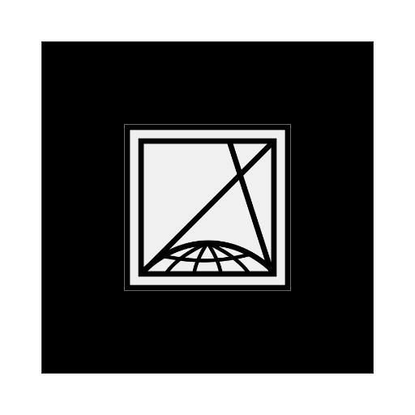

Augmented Reality demos using
AR.js
, made with ❤
Egyszerű kocka
Forráskód
Színes kocka benne forgó objektummal
Forráskód
Minecraft jellegű ház kerttel
Forráskód
Animált lebegő droid
Forráskód
Portál egy más világba :)
Forráskód
